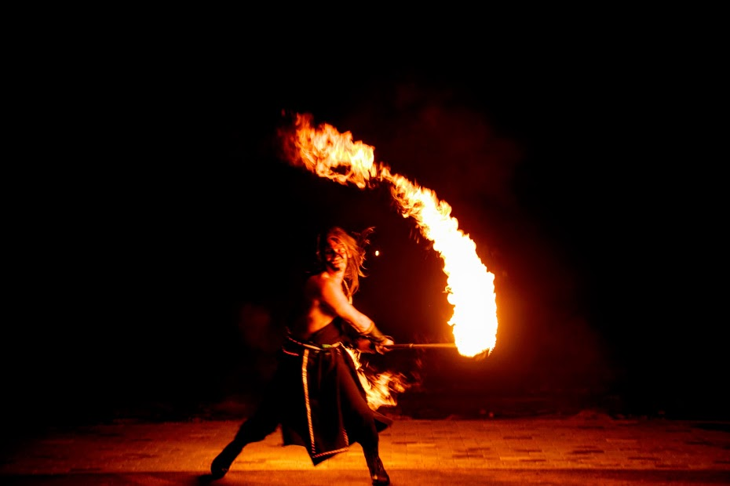
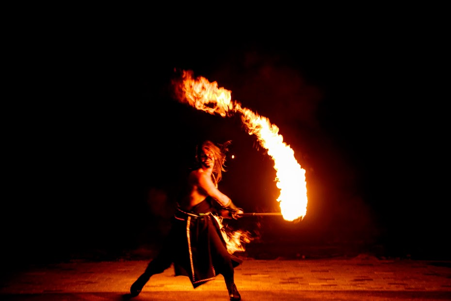

I am a passionate fire speaner who had fallen in love with fire arts by the end of the very first fire performance seen.
I have never seen the fire arts as a way to earn money or fame. The only reason I do it is because I really like it. I like the sound, the smell, the heat, the feeling. It makes me feel alive! I admire the flame, and try to become one with it while performing.
I like to spin alone, with friends, and for the public. My motto is 'Give me the kerosene and show me the stage'. I am always trying to master my existing tricks and learn new ones. My special interest is heavy equipment.